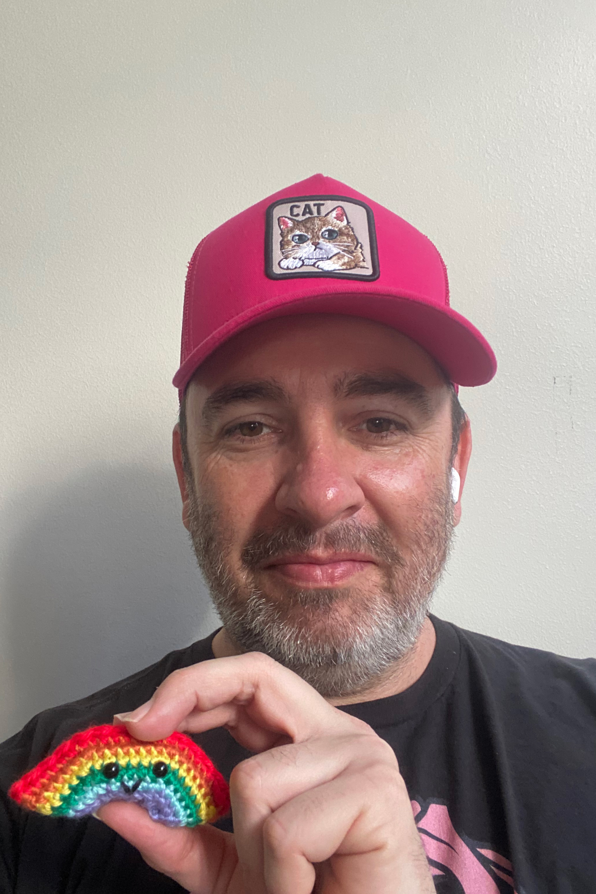
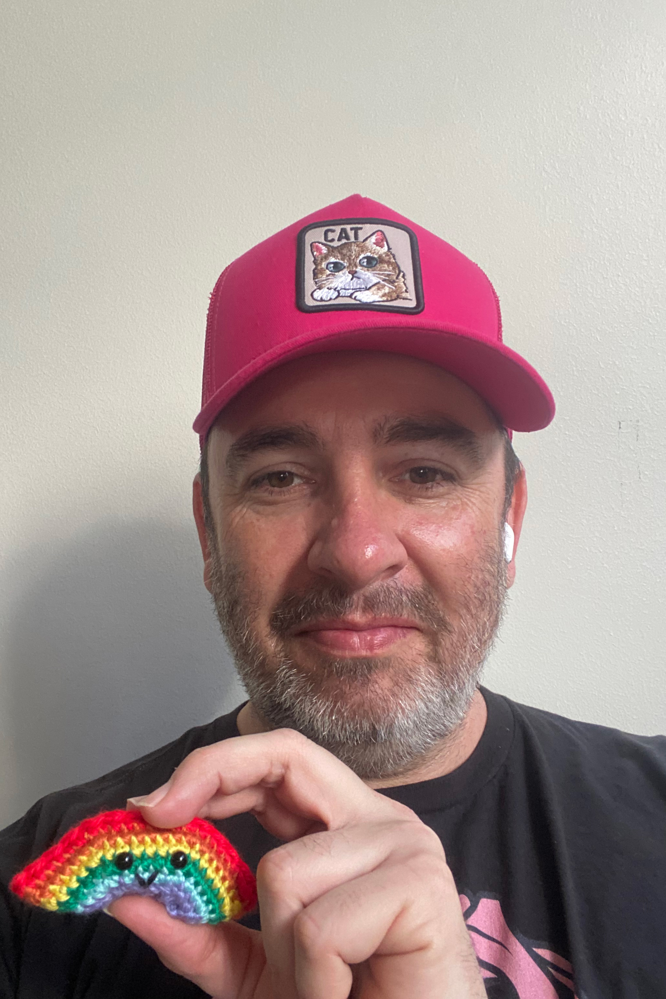

This website is for anyone who uses a crochet hook (i.e. A Hooker.) We are yarn enthusiasts, Bros and people who love to challenge stereotypes and get crafty. We are for Crochet Lovers and Knitting enthusiasts. We also love colors and RAINBOWS and polka dots! This website is for all lovers of yarn and Fun.
This launch of this website is exciting, as it is the culmination of a great deal of hooking and organizing. We are here to amplify the ideas from the greater Brochet community. Only through celebrating the diversity of all the yarn lovers will we be able to reach our mission, bringing love and peace to the world through yarn.
We feature the work of innovative yarn artists who Yarn BOMB the world around them. Our Senior Interviewer Buzzers McBuzzerstein sat down with Yarn Ambassador (and Olympian) Tom Daley. We also feature the winners of our inaugural Crochet is for TANKS competition. For the fashion lovers we feature the looks from the crochet fashion photography by Pietro Henricky. Try your hand at some of our crochet patterns.
We love you, we love crochet, we love Bros who crochet and anyone who loves yarn. We hope you enjoy our website.
Love,
Brochet & Friends
Community implies inclusion. Our community is fully inclusive of everyone. All types, abilities, shapes, sizes and colors are welcome here. We are all welcome to express, view, participate, not participate and enjoy. Our audience is our community and vice verse. Our intent is to explore crochet as a topic. Our point of view is slightly fashion, but also slightly crafty. The design intent of this website is to be minimalistic in terms of color palette and design, which should fully support the maximalisism in terms of subject and imagery. There has been a great deal of restraint applied in terms of minimalizing the design so that the subject can step forward. The subject should be at the focus (thank you Bauhaus.) So quickly though this has digressed into a very deep statement about artistic intent, and not just the intent of this website.
Do you love cute stuff? Do you like tiny things that fit in your hand? (which is what amigurumi is) Amigurumi, which literally translates to "crocheted or knitted stuffed toy" is the Japanese art of knitting or crocheting small, stuffed yarn creatures. I originally learned to crochet as a child, but hadn't done it in adulthood until the lockdown for the pandemic. My grandmother was good at making things, and I loved the idea that I could create things for my niece and nephew and other friends who are family. Take a peek at our patterns section for pics of things I have made through the years.
Do you make things with yarn or crafts or fashion or some interection between these things? Do you not make thing with yarn or craft, but you are interested or like viewing yarn and craft stuff? Please take the opportunity to make an account and join our community, where you can post photos, patterns or anything that you desire related to yarn, crafts, arts, rainbows, polka dots, glyphs, amigurumi, swiss style, the bauhaus art movement and/or constructivisim, art, gay pride or hella cute stuff.
Think of the Brochet and Friends community like it is social media, but less technofacisty or evil, and more yarn and inclusion focused. Joining is free, and posting just requires the creation of the free account (and for the "olds" in the audience, yes we do remember when lamebook and the rest lamies did when they originally launched, promising to be inclusive, peope centered, but seriously we promise not to be evil and stay connected to the yarn community through love and rainbows). Gosh these scrolling areas are getting pretty existential and deep, but what else are you supposed to do when the feature is required in a class, and though learning how to add it and move it around and stuff has been useful, for cereals I just mentioned minimalism and bauhaus. This 3rd column is so extra and though I full heartedly have included it in this assignment, if it were in a real design it would be used maybe slightly less. Just figuring out how to have my web design skills meet my graphic design aesthetic.
Join us in our pursuit of yarn and rainbows!